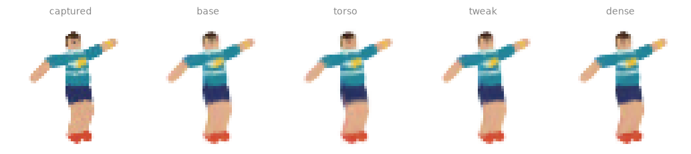
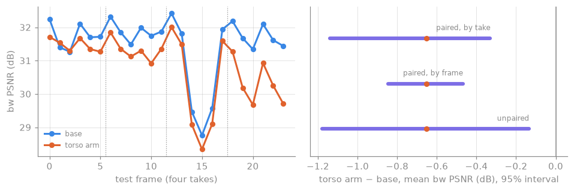
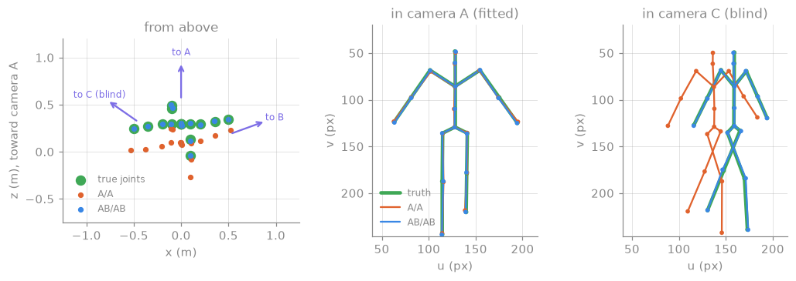
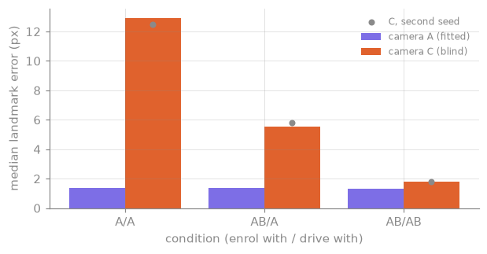
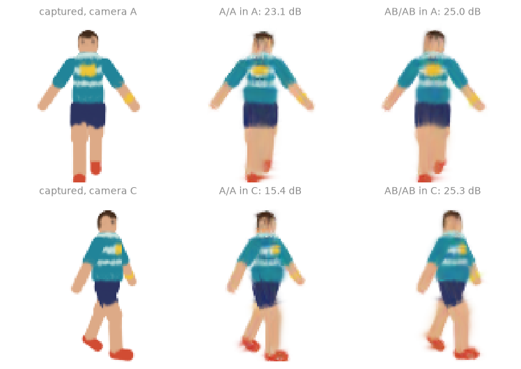

Who decides whether it worked? Pre-registered rules and the blind camera#
What you will learn
How to write a decision rule before a run (a primary endpoint, guards, floors, seeds), hash it, and apply it mechanically.
What honesty requires when an arm passes the main rule and fails a guard.
How a paired bootstrap turns per-frame scores into a confidence interval.
Why a model can look right in the camera it was fitted to and be wrong in 3D, and how a blind third camera measures what the fitted views cannot.
Which tolerances a blind-camera gain must exceed (annotation, calibration, seeds), and why the scorer interpolates in time instead of pairing nearest frames.
Prerequisites: Lesson 8a (held-out and sealed data, the seed spread), Lesson 2b (the pinhole camera) and Lesson 3a (forward kinematics).
1. Three arms and a story for each#
Lesson 8a removed noise from a comparison. This lesson removes the experimenter. Even with sealed data and seeds, a result still passes through choices made after the numbers are in: which metric to headline, which region, what counts as “better”. With a handful of metrics, a story can be found for almost any arm.
The toy study: a base avatar with a small budget of Gaussians, and three arms.
torso: move the budget. Sample the torso nearly twice as densely and the rest more thinly, at about the same total.
tweak: change the mask-loss weight slightly. Nothing is expected of it.
dense: two and a half times the budget everywhere.
Each arm is trained with two seeds, at a fixed iteration, and scored on held-out frames with three metrics: torso PSNR, PSNR of everything else (“limbs”), and whole-frame PSNR on black and white (“bw”). The regions come from one reference model for every arm (Lesson 8a, Section 7.3).
actor = cu.ToyActor(density=1500.0)
cam = cu.orbit_camera(0, size=48)
poses, trans = cu.motion("dance", 24)
take = cu.make_video(actor, poses, trans, cam=cam, noise=0.02, seed=1)
held_idx = list(range(2, 24, 4))
train_idx = [t for t in range(24) if t not in held_idx]
train, held = take.subset(train_idx), take.subset(held_idx)
target = torch.stack([held.frame(t) for t in range(len(held))])
TORSO = ("chest", "abdomen", "pelvis")
LIMBS = tuple(p for p in cu.PART_NAMES if p not in TORSO)
area = {name: cu.body.part_area(i) for i, name in enumerate(cu.PART_NAMES)}
share = sum(area[p] for p in TORSO) / sum(area.values())
torso_boost = {**{p: 1.9 for p in TORSO}, **{p: (1 - 1.9 * share) / (1 - share) for p in LIMBS}}
ARMS = {"base": {}, "torso": {"boost": torso_boost}, "tweak": {"w_alpha": 0.6}, "dense": {"density": 500.0}}
SEEDS = [0, 1]
def train_arm(name, seed):
cfg = dict(ARMS[name])
w_alpha = cfg.pop("w_alpha", 0.5)
avatar = cu.ShellAvatar(seed=seed, offsets=(0.0, 0.03), tex_res=(10, 12), **{"density": 200.0, **cfg})
cu.fit(avatar, train, iters=70, lr=0.2, seed=seed, w_alpha=w_alpha)
return avatar
models = {name: [train_arm(name, s) for s in SEEDS] for name in ARMS}
print({name: m[0].n_gaussians for name, m in models.items()}, "Gaussians")
{'base': 1046, 'torso': 1154, 'tweak': 1046, 'dense': 2594} Gaussians
reference = models["base"][0]
region = {name: torch.stack([ev.region_mask(reference, held.cams[t], held.poses[t], held.trans[t], parts)
for t in range(len(held))]) for name, parts in (("torso", TORSO), ("limbs", LIMBS))}
def score(avatar):
imgs, _ = cu.render_video(avatar, held)
return {"torso_psnr": ev.masked_psnr(imgs, target, region["torso"]),
"limbs_psnr": ev.masked_psnr(imgs, target, region["limbs"]),
"bw_psnr": ev.evaluate_bw(avatar, held)["mean_bw"]}
scores = {}
for name, ms in models.items():
per_seed = [score(m) for m in ms]
scores[name] = {k: [r[k] for r in per_seed] for k in per_seed[0]}
print(f"{name:6s}", {k: [round(x, 2) for x in v] for k, v in scores[name].items()})
base {'torso_psnr': [25.5, 25.63], 'limbs_psnr': [26.85, 26.93], 'bw_psnr': [32.33, 32.06]}
torso {'torso_psnr': [27.19, 27.49], 'limbs_psnr': [24.68, 24.8], 'bw_psnr': [30.78, 30.72]}
tweak {'torso_psnr': [25.52, 25.61], 'limbs_psnr': [26.97, 26.95], 'bw_psnr': [32.29, 32.15]}
dense {'torso_psnr': [27.85, 27.74], 'limbs_psnr': [28.94, 28.87], 'bw_psnr': [34.56, 34.3]}
Read the table the way a hopeful author would. The torso arm: “sharper shirt print, a clear gain, same budget”. The dense arm: “better everywhere”. Even the tweak moves some column up on some seed. Every one of these sentences is true of some cell of the table. None of them was promised before the table existed, and that is the problem: the claim was fitted to the data.
cu.show_images([target[1]] + [models[name][0].render(held.cams[1], held.poses[1], held.trans[1])[0]
for name in ARMS], ["captured"] + list(ARMS), size=1.9);

2. The rule comes first#
A pre-registered decision rule is written before any job of the round runs [Nosek et al., 2018]. It names:
the primary endpoint: the one metric the arm exists to improve;
the guards: metrics the arm must not make worse;
the floors: the smallest difference worth counting on each metric, whatever the seeds say;
the seeds, and what “counts” means (Lesson 8a, Section 4): same sign on every seed, larger than the seed spread, larger than the floor;
what a pass is: a counted gain on the primary endpoint and no counted loss on any guard.
Then the rule is hashed, and the hash is recorded somewhere the results cannot touch (a commit, a message).
RULE = {
"name": "toy round 1: does moving the Gaussian budget help the torso?",
"seeds": SEEDS,
"iteration": 70,
"primary": {"metric": "torso_psnr", "higher_is_better": True, "floor": 0.05},
"guards": [{"metric": "limbs_psnr", "higher_is_better": True, "floor": 0.05},
{"metric": "bw_psnr", "higher_is_better": True, "floor": 0.05}],
"pass": "counted gain on the primary endpoint and no counted loss on any guard",
}
RULE_HASH = ev.hash_rule(RULE)
print("rule hash, recorded before the run:", RULE_HASH)
rule hash, recorded before the run: 9ca34de397b72dfd
(In this notebook the models were trained a few cells earlier, which is the wrong order. In a real round the cell above runs, and its hash is committed, before the training cell exists.)
ev.decision_rule applies the rule. It has no opinion and no free parameter.
def report(arm):
verdict = ev.decision_rule(RULE, scores["base"], scores[arm])
assert verdict["rule_hash"] == RULE_HASH # the rule applied is the rule registered
print(f"\narm '{arm}': {verdict['verdict'].upper()} {'; '.join(verdict['reasons'])}")
for r in verdict["rows"]:
word = {1: "counted gain", 0: "not counted", -1: "counted LOSS"}[r["counted"]]
print(f" {r['role']:7s} {r['metric']:10s} delta per seed {np.round(r['delta'], 2)} "
f"spread {r['spread']:.2f} -> {word}")
return verdict
verdicts = {arm: report(arm) for arm in ("torso", "tweak", "dense")}
assert verdicts["torso"]["primary"] and not verdicts["torso"]["guards"] and verdicts["torso"]["verdict"] == "fail"
assert verdicts["tweak"]["verdict"] == "fail" and not verdicts["tweak"]["primary"]
assert verdicts["dense"]["verdict"] == "pass"
arm 'torso': FAIL guard limbs_psnr: counted loss; guard bw_psnr: counted loss
primary torso_psnr delta per seed [1.68 1.85] spread 0.30 -> counted gain
guard limbs_psnr delta per seed [-2.16 -2.13] spread 0.12 -> counted LOSS
guard bw_psnr delta per seed [-1.55 -1.34] spread 0.27 -> counted LOSS
arm 'tweak': FAIL primary torso_psnr: no counted gain
primary torso_psnr delta per seed [ 0.01 -0.03] spread 0.13 -> not counted
guard limbs_psnr delta per seed [0.12 0.01] spread 0.09 -> not counted
guard bw_psnr delta per seed [-0.04 0.1 ] spread 0.27 -> not counted
arm 'dense': PASS
primary torso_psnr delta per seed [2.35 2.1 ] spread 0.13 -> counted gain
guard limbs_psnr delta per seed [2.09 1.94] spread 0.09 -> counted gain
guard bw_psnr delta per seed [2.23 2.25] spread 0.27 -> counted gain
The three arms land in three different places.
tweak has no counted gain. Its differences change sign between seeds or sit inside the spread.
dense passes: a counted gain on the primary endpoint, and the guards gain too. (The rule did not register cost. A real rule would add the Gaussian count or the training time as a guard.)
torso is the instructive one. It passes the main rule and fails a guard: the torso gains, as intended, and the limbs and the whole frame lose by more than their seed spread, because the Gaussians that sharpened the torso were taken from the arms and legs.
What honesty requires when a guard fails#
The verdict of the torso arm is fail. It is tempting to soften that. Three moves are common, and each one is a way of rewriting the rule after seeing the data:
drop the guard (“the limbs were never the point”);
change the floor or the region until the loss is “not counted”;
report the primary gain and leave the guard out of the table.
The hash exists to make these visible. Any edit to the rule changes it:
softened = {**RULE, "guards": []}
print("verdict under the softened rule:", ev.decision_rule(softened, scores["base"], scores["torso"])["verdict"])
print("its hash:", ev.hash_rule(softened), "- registered:", RULE_HASH)
assert ev.hash_rule(softened) != RULE_HASH
verdict under the softened rule: pass
its hash: 703048c665d01d2b - registered: 9ca34de397b72dfd
You may still decide to use the torso arm. Perhaps the picture looks better to you, or the next experiment needs it. Then the honest report has two separate statements: the arm failed its pre-registered rule, and it was adopted anyway, by eye, as an override. The override does not change the verdict, and the costs that the guard measured are carried forward as known costs. A new idea that fixes the guard gets a new rule, a new hash and a new round.
3. An interval for a difference: the paired bootstrap#
The seed spread says whether training noise could explain a difference. A second source of noise is the choice of test frames: other frames would give other scores. The bootstrap [Efron and Tibshirani, 1994] estimates that from the data. Resample the test frames with replacement, recompute the statistic, repeat a few thousand times, and read the interval off the resampled values.
Two details decide whether the interval is honest. Start with the wrong version: treat the two models’ per-frame scores as two unrelated samples.
takes = [cu.make_video(actor, *cu.motion(name, 6), cam=cam, noise=0.02, seed=20 + i)
for i, name in enumerate(("wave", "arms_up", "squat", "walk"))]
take_id = np.repeat(np.arange(len(takes)), 6)
def per_frame_bw(avatar):
return np.concatenate([ev.evaluate_bw(avatar, v)["bw"] for v in takes])
a, b = per_frame_bw(models["torso"][0]), per_frame_bw(models["base"][0]) # the guard metric of Section 2
rng = np.random.default_rng(0)
unpaired = np.array([a[rng.integers(0, a.size, a.size)].mean() - b[rng.integers(0, b.size, b.size)].mean()
for _ in range(2000)])
paired = ev.paired_bootstrap(a, b, n_boot=2000, seed=0)
cluster = ev.paired_bootstrap(a, b, n_boot=2000, clusters=take_id, seed=0)
width = lambda lo, hi: hi - lo
u_lo, u_hi = np.quantile(unpaired, [0.025, 0.975])
fig, axes = plt.subplots(1, 2, figsize=(8.8, 3.0))
axes[0].plot(b, color=cu.COLORS["gaussian"], marker="o", label="base")
axes[0].plot(a, color=cu.COLORS["error"], marker="o", label="torso arm")
for k in range(1, len(takes)):
axes[0].axvline(6 * k - 0.5, color=cu.plotting.INK, lw=0.8, ls=":")
axes[0].set_xlabel("test frame (four takes)"); axes[0].set_ylabel("bw PSNR (dB)"); axes[0].legend(fontsize=8)
for y, (lo, hi, name) in enumerate([(u_lo, u_hi, "unpaired"), (paired["lo"], paired["hi"], "paired, by frame"),
(cluster["lo"], cluster["hi"], "paired, by take")]):
axes[1].plot([lo, hi], [y, y], color=cu.COLORS["camera"], lw=4, solid_capstyle="round")
axes[1].text(hi, y + 0.18, name, fontsize=8, ha="right")
axes[1].axvline(0, color=cu.plotting.INK, lw=1); axes[1].scatter([paired["estimate"]] * 3, [0, 1, 2], color=cu.COLORS["error"], zorder=3)
axes[1].set_yticks([]); axes[1].set_ylim(-0.6, 2.7); axes[1].set_xlabel("torso arm − base, mean bw PSNR (dB), 95% interval")
fig.tight_layout()
print(f"mean difference {paired['estimate']:+.2f} dB")
print(f"95% interval unpaired [{u_lo:+.2f}, {u_hi:+.2f}] paired by frame [{paired['lo']:+.2f}, {paired['hi']:+.2f}]"
f" paired by take [{cluster['lo']:+.2f}, {cluster['hi']:+.2f}]")
assert width(paired["lo"], paired["hi"]) < 0.7 * width(u_lo, u_hi)
mean difference -0.65 dB
95% interval unpaired [-1.18, -0.13] paired by frame [-0.84, -0.47] paired by take [-1.14, -0.33]

The left plot shows why the unpaired interval is so wide. Frames differ from each other by several decibels (some poses are harder than others), and both models go up and down together. Almost all of that variation is shared. Pairing removes it: resample frames, and keep each frame’s two scores together, so the statistic is the mean of per-frame differences.
The second detail is the unit that is resampled. Frames of one take are not independent: they share a motion, a lighting and a tracking run. Resampling single frames then overstates how much independent evidence there is. The cluster bootstrap resamples whole takes. With four takes it is a crude interval, and that crudeness is the truthful statement: four takes is not much evidence. A rule can register both conditions, as the real pre-registration below does: the gain must exceed the seed spread and its cluster-bootstrap interval must exclude zero.
4. Right in the picture, wrong in the world#
Every score so far was computed in the camera that the model was fitted to, or in a camera like it. Such a score has a blind spot that no amount of held-out frames removes. A camera measures directions, not distances. Whatever error lies along the viewing rays of the fitted camera is invisible in its pixels.
The cleanest case is size against distance. Scale a body by \(s\) about the world origin and look at it with a camera with rotation \(W\) and translation \(t\), so that \(X_c = W X + t\) (Lesson 2b):
A pinhole projection divides by depth, so the common factor \(s\) cancels. A body that is 6 % larger, seen from
a camera position that is 6 % farther, gives exactly the same image. ev.scaled_camera builds the camera on
the right-hand side; the cell checks the identity.
PX = 256 # resolution of the tracking cameras
cam_a = cu.orbit_camera(0, size=PX) # A: the main camera, in front
cam_b = cu.orbit_camera(70, size=PX) # B: a second camera, used in some conditions
cam_c = cu.orbit_camera(-55, size=PX) # C: the blind camera, never used for fitting
pose_d, trans_d = cu.motion("walk", 12) # the driving take
joints_true = ev.fk_batch(pose_d, trans_d) # (frames, joints, 3)
lhs = cam_a.project(1.06 * joints_true)[0]
rhs = ev.scaled_camera(cam_a, 1.06).project(joints_true)[0]
print(f"largest pixel difference between the two sides: {float((lhs - rhs).abs().max()):.1e}")
assert torch.allclose(lhs, rhs, atol=1e-3)
largest pixel difference between the two sides: 2.3e-05
So a fit that sees the person through camera A alone cannot know the person’s size, and therefore cannot know the distance. It keeps whatever size its prior suggests. Other errors hide the same way: a limb that swings toward the camera looks almost like one that swings away.
A toy tracker with one or two cameras#
ev.solve_poses is a small multi-view tracker. It receives 2D joint detections with noise, in one camera or
in several, and an initial guess that is off by a few degrees. It adjusts the pose and the root position per
frame, and one body scale for the take, until the projected joints land on the detections. A weak prior keeps
rotations near the initial guess, which settles the directions that the cameras cannot see.
The study follows the design of the real one. Enrolment fits the identity (here: the body scale, later the texture) on one take. Driving estimates the motion of a second take with that identity frozen.
Condition |
Enrol with |
Drive with |
Question |
|---|---|---|---|
A/A |
A |
A |
one camera for everything |
AB/A |
A + B |
A |
does a second camera at enrolment help? |
AB/AB |
A + B |
A + B |
does a second camera for tracking help? |
pose_e, trans_e = cu.motion("turn", 12) # the enrolment take
PRIOR_SCALE, DETECT_PX, INIT_DEG = 1.06, 1.5, 6.0 # the tracker starts 6 % too tall
def detect(cam, pose, trans, seed):
px = cam.project(ev.fk_batch(pose, trans))[0]
return px + DETECT_PX * cu.randn(*px.shape, generator=cu.generator(seed))
det = {("A", "enrol"): detect(cam_a, pose_e, trans_e, 1), ("B", "enrol"): detect(cam_b, pose_e, trans_e, 2),
("A", "drive"): detect(cam_a, pose_d, trans_d, 3), ("B", "drive"): detect(cam_b, pose_d, trans_d, 4)}
CAMS = {"A": [("A", cam_a)], "AB": [("A", cam_a), ("B", cam_b)]}
def run_condition(enrol_with, drive_with, seed):
init_e = cu.perturb_poses(pose_e, INIT_DEG, seed=20 + seed)
init_d = cu.perturb_poses(pose_d, INIT_DEG, seed=30 + seed)
ce, cd = CAMS[enrol_with], CAMS[drive_with]
pe, te, scale, _ = ev.solve_poses([det[(n, "enrol")] for n, _ in ce], [c for _, c in ce], init_e, trans_e,
scale=PRIOR_SCALE, fit_scale=True, iters=200)
pd, td, _, _ = ev.solve_poses([det[(n, "drive")] for n, _ in cd], [c for _, c in cd], init_d, trans_d,
scale=scale, iters=200)
return {"scale": scale, "enrol": (pe, te), "drive": (pd, td), "joints": ev.fk_batch(pd, td, scale)}
CONDITIONS = {"A/A": ("A", "A"), "AB/A": ("AB", "A"), "AB/AB": ("AB", "AB")}
results = {(name, s): run_condition(*CONDITIONS[name], s) for name in CONDITIONS for s in (0, 1)}
for name in CONDITIONS:
print(f"{name:6s} body scale after enrolment: {results[(name, 0)]['scale']:.3f} (truth 1.000, prior {PRIOR_SCALE})")
assert abs(results[("A/A", 0)]["scale"] - 1) > 0.02 and abs(results[("AB/AB", 0)]["scale"] - 1) < 0.01
A/A body scale after enrolment: 1.042 (truth 1.000, prior 1.06)
AB/A body scale after enrolment: 1.001 (truth 1.000, prior 1.06)
AB/AB body scale after enrolment: 1.001 (truth 1.000, prior 1.06)
One camera leaves the scale near its prior. Two cameras, a known distance apart, pin it down: this is triangulation [Hartley and Zisserman, 2004]. Now look at the driven skeleton from above, and in the two cameras.

From above, the A/A skeleton sits behind the true one, pushed back along camera A’s viewing direction, and its limbs are spread in depth. In camera A the three skeletons coincide. In camera C the A/A skeleton stands in the wrong place.
The primary endpoint: landmark error in the blind camera#
The blind camera C sees the scene from a third direction. Its images are never read by enrolment, by driving, by tuning or by selection. Only the scorer uses C, and it needs two things: C’s calibration, and reference positions of a few landmarks in C’s images, marked by a person. The primary endpoint is the distance in pixels between each predicted landmark, projected into C, and its reference.
Both ingredients have errors, so the toy simulates them. The landmarks (wrists and ankles) are marked in two independent annotation passes, each with its own click error, and the reference is their mean. The scorer’s calibration of C is slightly off, as any estimated calibration is [Zhang, 2000].
LANDMARKS = [cu.joint_index(j) for j in ("l_wrist", "r_wrist", "l_ankle", "r_ankle")]
ANNOT_PX = 0.8
true_c = cam_c.project(joints_true[:, LANDMARKS])[0] # where the landmarks really are in C
pass1 = true_c + ANNOT_PX * cu.randn(*true_c.shape, generator=cu.generator(41))
pass2 = true_c + ANNOT_PX * cu.randn(*true_c.shape, generator=cu.generator(42))
reference_c = 0.5 * (pass1 + pass2)
tilt = cu.axis_angle_to_matrix(torch.tensor([0.0, math.radians(0.08), 0.0]))
cam_c_est = cu.Camera(tilt @ cam_c.R, tilt @ cam_c.T, cam_c.fx * 1.002, cam_c.fy * 1.002, cam_c.cx + 0.3, cam_c.cy,
PX, PX) # the scorer's estimate of C
def blind_error(joints): # (frames, landmarks) in px
return ev.landmark_error(cam_c_est.project(joints[:, LANDMARKS])[0], reference_c)
def fitted_error(joints): # the same landmarks in camera A
return ev.landmark_error(cam_a.project(joints[:, LANDMARKS])[0], cam_a.project(joints_true[:, LANDMARKS])[0])
med_a = {n: float(fitted_error(results[(n, 0)]["joints"]).median()) for n in CONDITIONS}
med_c = {(n, s): float(blind_error(results[(n, s)]["joints"]).median()) for n in CONDITIONS for s in (0, 1)}
fig, ax = plt.subplots(figsize=(6.4, 3.0))
x = np.arange(len(CONDITIONS))
ax.bar(x - 0.2, [med_a[n] for n in CONDITIONS], 0.4, color=cu.COLORS["camera"], label="camera A (fitted)")
ax.bar(x + 0.2, [med_c[(n, 0)] for n in CONDITIONS], 0.4, color=cu.COLORS["error"], label="camera C (blind)")
ax.scatter(x + 0.2, [med_c[(n, 1)] for n in CONDITIONS], color=cu.plotting.INK, s=18, zorder=3, label="C, second seed")
ax.set_xticks(x); ax.set_xticklabels(list(CONDITIONS)); ax.set_xlabel("condition (enrol with / drive with)")
ax.set_ylabel("median landmark error (px)"); ax.legend(fontsize=8)
for n in CONDITIONS:
print(f"{n:6s} median landmark error: camera A {med_a[n]:.2f} px, blind camera C {med_c[(n, 0)]:.2f} px")
assert med_a["A/A"] < 3.0 and med_c[("A/A", 0)] > 4 * med_a["A/A"]
assert med_c[("AB/AB", 0)] < 0.3 * med_c[("A/A", 0)]
A/A median landmark error: camera A 1.37 px, blind camera C 12.93 px
AB/A median landmark error: camera A 1.37 px, blind camera C 5.53 px
AB/AB median landmark error: camera A 1.33 px, blind camera C 1.82 px

In the fitted camera all three conditions are within a pixel or two of the truth. In the blind camera the one-camera condition is several times worse than it looked, and the two-camera condition is not. The middle condition is the informative one: a second camera at enrolment fixes the body’s size, but driving with one camera still leaves each frame’s depth to the prior, so part of the gap remains.
The same gap in the pixels#
Landmarks are the primary endpoint because they need no model of appearance. The picture tells the same
story. Fit the texture with the enrolment poses of each condition, at 48 px, and render the driven take in A
and in C. The believed body scale enters through ev.scaled_camera.
FIT_PX = 48
small = lambda c: c.scaled(FIT_PX / PX)
def enrol_avatar(name):
r = results[(name, 0)]
cams = [c for _, c in CAMS[CONDITIONS[name][0]]]
vids = [cu.make_video(actor, pose_e, trans_e, cam=small(c)) for c in cams]
video = cu.Video(torch.cat([v.rgb for v in vids]), torch.cat([v.mask for v in vids]),
r["enrol"][0].repeat(len(cams), 1, 1), r["enrol"][1].repeat(len(cams), 1),
[ev.scaled_camera(small(c), r["scale"]) for c in cams for _ in range(len(pose_e))])
avatar = cu.ShellAvatar(seed=0, density=500.0, offsets=(0.0, 0.03), tex_res=(10, 12))
cu.fit(avatar, video, iters=90, lr=0.2, seed=0)
return avatar
def view_score(name, avatar, c):
r = results[(name, 0)]
truth = cu.make_video(actor, pose_d, trans_d, cam=small(c).scaled(2))
believed = ev.replace_cams(truth, ev.scaled_camera(small(c).scaled(2), r["scale"]))
e = cu.evaluate(avatar, believed, poses=r["drive"][0], trans=r["drive"][1])
img = avatar.render(believed.cams[f0], r["drive"][0][f0], r["drive"][1][f0])[0]
return e["mean_psnr"], img, truth.frame(f0)
avatars = {name: enrol_avatar(name) for name in ("A/A", "AB/AB")}
panels, titles, psnr_view = [], [], {}
for cname, c in (("A", cam_a), ("C", cam_c)):
row = {name: view_score(name, avatars[name], c) for name in ("A/A", "AB/AB")}
panels.append(row["A/A"][2]); titles.append(f"captured, camera {cname}")
for name, (value, img, _) in row.items():
psnr_view[(name, cname)] = value
panels.append(img); titles.append(f"{name} in {cname}: {value:.1f} dB")
cu.show_images(panels, titles, ncols=3, size=2.3);
gap = {n: psnr_view[(n, "A")] - psnr_view[(n, "C")] for n in ("A/A", "AB/AB")}
print(f"PSNR in A minus PSNR in C: A/A {gap['A/A']:+.1f} dB, AB/AB {gap['AB/AB']:+.1f} dB")
assert gap["A/A"] > 3.0 and gap["AB/AB"] < 0.5 * gap["A/A"]
PSNR in A minus PSNR in C: A/A +7.7 dB, AB/AB -0.4 dB

The one-camera avatar looks acceptable in camera A and stands beside the person in camera C. The two-camera avatar scores about the same in both. The toy is kind to the one-camera fit in one respect: the enrolment take is a full turn, so camera A has seen every side of the body. Without that, C would also show surfaces that A never saw.
Tolerances: what a gain must exceed#
A blind-camera number is a measurement, and a measurement has a floor below which differences mean nothing. Three floors are measured, not assumed:
the annotation floor: the median distance between the two annotation passes. The reference is not known better than this;
the calibration floor: the error of C’s calibration, measured on a board pose that the calibration did not use;
the seed spread of the endpoint (Lesson 8a).
annotation_floor = float(ev.landmark_error(pass1, pass2).median())
gx, gy = torch.meshgrid(torch.arange(9.0), torch.arange(6.0), indexing="ij") # a 9 x 6 board, 40 mm squares
board = torch.stack([0.04 * gx.reshape(-1) - 0.16, 0.9 + 0.04 * gy.reshape(-1), torch.full((54,), 0.3)], -1)
calibration_floor = float(ev.landmark_error(cam_c_est.project(board)[0], cam_c.project(board)[0]).mean())
spread_c = abs(med_c[("A/A", 0)] - med_c[("A/A", 1)])
tolerance = max(annotation_floor, spread_c)
print(f"annotation floor {annotation_floor:.2f} px | calibration floor {calibration_floor:.2f} px | "
f"seed spread of A/A {spread_c:.2f} px -> a gain must exceed {tolerance:.2f} px")
def advance(base, arm, label):
"""The toy version of the primary decision: paired per (frame, landmark), clustered by frame."""
e_base, e_arm = cu.to_np(blind_error(results[(base, 0)]["joints"])), cu.to_np(blind_error(results[(arm, 0)]["joints"]))
frames = np.repeat(np.arange(e_base.shape[0]), e_base.shape[1])
ci = ev.paired_bootstrap(e_base.ravel(), e_arm.ravel(), n_boot=2000, clusters=frames, stat="median", seed=0)
same_sign = all(med_c[(base, s)] - med_c[(arm, s)] > 0 for s in (0, 1))
ok = ci["estimate"] > tolerance and ci["lo"] > 0 and same_sign
print(f"{label:28s} paired median gain {ci['estimate']:+.2f} px, 95% interval [{ci['lo']:+.2f}, {ci['hi']:+.2f}]"
f" -> {'ADVANCES' if ok else 'does not advance'}")
return ok, ci
ok_stereo, _ = advance("A/A", "AB/AB", "AB/AB over A/A")
assert ok_stereo
annotation floor 1.26 px | calibration floor 1.08 px | seed spread of A/A 0.44 px -> a gain must exceed 1.26 px
AB/AB over A/A paired median gain +11.66 px, 95% interval [+9.08, +13.98] -> ADVANCES
Now a change that should not advance. Give the two-camera tracker a weaker pose prior. Whatever it does to an error that is already near the annotation floor, it cannot be shown with these annotations.
def run_tweak(seed):
init_d = cu.perturb_poses(pose_d, INIT_DEG, seed=30 + seed)
s = results[("AB/AB", seed)]["scale"]
pd, td, _, _ = ev.solve_poses([det[("A", "drive")], det[("B", "drive")]], [cam_a, cam_b], init_d, trans_d,
scale=s, iters=200, prior=0.005)
return {"joints": ev.fk_batch(pd, td, s)}
for s in (0, 1):
results[("AB/AB weak prior", s)] = run_tweak(s)
med_c[("AB/AB weak prior", s)] = float(blind_error(results[("AB/AB weak prior", s)]["joints"]).median())
ok_tweak, ci_tweak = advance("AB/AB", "AB/AB weak prior", "weak prior over AB/AB")
assert not ok_tweak and abs(ci_tweak["estimate"]) < annotation_floor
weak prior over AB/AB paired median gain +0.02 px, 95% interval [-0.06, +0.09] -> does not advance
The lesson of the floors is about where to spend effort. If the gains you hope for are smaller than the annotation floor, more frames will not help: annotate more carefully, or twice more, or at a higher resolution. And one limit is built in. Camera C measures projection error. It cannot see errors along its own viewing rays, so it is a much stronger test than the fitted views, and still not a 3D ground truth.
In the real pipeline#
Pre-registered rules. The colour-offset study (docs/color_offset.md) is the real version of Section 2, over three rounds. Each round’s rule was written and hashed before any job ran: a pixel gain, a perceptual gain with no perceptual loss, every guard column, and a memorisation check, with two seeds and fixed floors (0.05 dB PSNR, 0.002 SSIM, 0.005 DISTS or LPIPS; see [Wang et al., 2004] and [Zhang et al., 2018] for these metrics). The arms gained more than 2 dB on raised arms in every round. Rounds 1 and 2 failed their guards. Round 3’s faded-head arm passed the main rule narrowly and failed an added neck guard. The author then adopted it by eye as a research base. The document’s status line says what Section 2 asks for: it is recorded as an override, “not a passed result”, and the model behind all published results is unchanged.
The blind camera. Status, stated plainly: the real blind-camera pilot has not been recorded. No synchronised multi-camera footage of the subject exists yet. What exists is
a synthetic three-camera replay that checks the calibration and pairing tools against a known answer (docs/research_brief.md), and
a pre-registration draft, not frozen, whose tolerances are to be set on the pilot (planning/blind_camera/prereg_draft.md).
Toy |
Draft study |
|---|---|
Conditions A/A, AB/A, AB/AB |
the same three, two seeds each; AB/AB reuses the AB/A checkpoint |
4 joints as landmarks, simulated click noise |
18 landmarks (wrists, fingertips, ankles, heels, toes), annotated by hand, twice, on different days |
Median px error in C |
the same, as the primary endpoint; secondary: silhouette boundary, body dimensions against a tape, contact timing, floor penetration, stance slip |
|
the same three conditions (sign across two sessions), plus guards on coverage, contact timing and floor penetration |
Calibration floor from a board |
held-out board error in C; gates on intrinsics RMS and on the accepted fraction of frame pairs |
Time interpolation, timing budget |
the scorer interpolates; the checked pairer in |
On the synthetic replay, with 1.5 px detection noise and estimated calibration, landmark error in C was 2.0 / 4.2 px (median / p90) with time interpolation against 4.5 / 13.1 px with nearest-frame pairing at 30 fps, and 1.9 / 4.2 against 2.5 / 5.7 px at 60 fps. Nearest-frame pairing also accepted a mismatch of more than 180 ms inside a dropped-frame gap. Those are synthetic numbers: they show that the tools recover a known answer and say nothing yet about real footage. The draft’s own power estimate concludes that the binding limit is the annotation floor, not the number of frames.
Summary#
Write the decision rule before the run: primary endpoint, guards, floors, seeds, and what a pass is. Hash it. Apply it mechanically.
An arm that passes the main rule and fails a guard has failed. Using it anyway is an override, reported as one, with the guard’s cost carried forward.
Compare models on the same frames and bootstrap the paired differences; resample takes, not frames, when frames within a take are correlated.
A camera cannot see along its own rays. Size against distance, and depth of limbs, hide in the fitted view. A blind camera, used only by the scorer, exposes them; landmark error in its pixels is the primary endpoint.
A blind-camera gain must exceed the annotation floor, the calibration floor and the seed spread. Unsynchronised cameras are scored by interpolating in time, with a timing budget that rejects gaps.
Exercises#
Add a cost guard to
RULE(the number of Gaussians must not rise by more than 20 %) and re-apply it to the dense arm. What changes, and what happens to the hash?Move the blind camera to the same side as camera A (
cu.orbit_camera(-10, size=PX)) and recompute the median error of the A/A condition. Why does it shrink?In Section 5, give camera C the same clock as camera A (no offset, no rate error). What happens to the two methods, and what does that say about testing a scorer only on synchronised data?
Solution 1
rule2 = {**RULE, "guards": RULE["guards"] + [{"metric": "gaussians", "higher_is_better": False, "floor": 0.0}]}
n = lambda arm: [float(m.n_gaussians) for m in models[arm]]
base2, dense2 = {**scores["base"], "gaussians": n("base")}, {**scores["dense"], "gaussians": n("dense")}
print(ev.decision_rule(rule2, base2, dense2)["reasons"], ev.hash_rule(rule2) != RULE_HASH)
The count is the same on both seeds, so its spread is zero and any increase is a counted loss: the dense arm now fails. To allow 20 %, register the guard on the ratio and set the floor accordingly. Either way it is a new rule with a new hash, to be written before the round, not after.
Solution 2
cam_near = cu.orbit_camera(-10, size=PX)
j = results[("A/A", 0)]["joints"][:, LANDMARKS]
print(float(ev.landmark_error(cam_near.project(j)[0], cam_near.project(joints_true[:, LANDMARKS])[0]).median()))
The A/A errors lie along camera A’s viewing rays. A camera 10 degrees away looks almost along the same rays, so it sees only a small component of the error. A blind camera is informative in proportion to the angle between its rays and those of the fitted cameras.
Solution 3
Replace t_c by t_a (after the dropped frames are removed). Every C frame then has an exact partner, both
methods agree, and the error is only the tracking noise. A scorer validated on synchronised synthetic data
can therefore hide a pairing bug completely; the test data must include offsets, rate errors and gaps.
References#
Pre-registration: [Nosek et al., 2018]. The bootstrap: [Efron and Tibshirani, 1994].
Two-view geometry and triangulation: [Hartley and Zisserman, 2004]. Camera calibration from a planar board: [Zhang, 2000].
Perceptual metrics used as guards in the real rule: [Wang et al., 2004], [Zhang et al., 2018].
The project’s records: docs/color_offset.md, docs/research_brief.md, planning/blind_camera/prereg_draft.md.